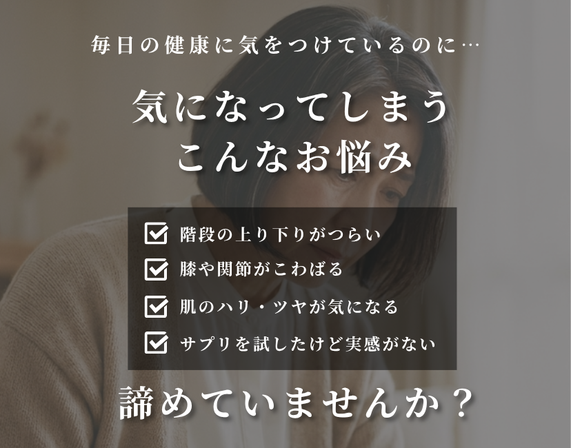
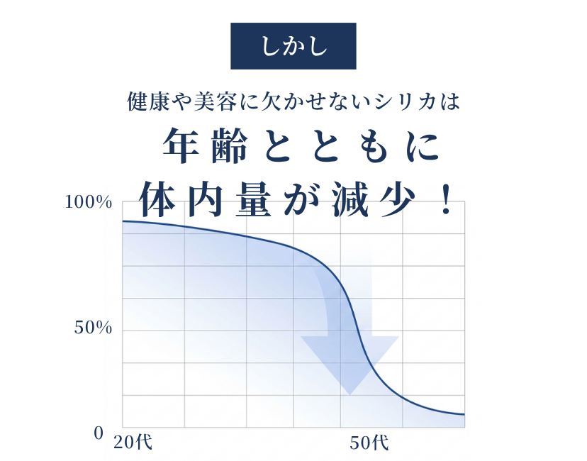
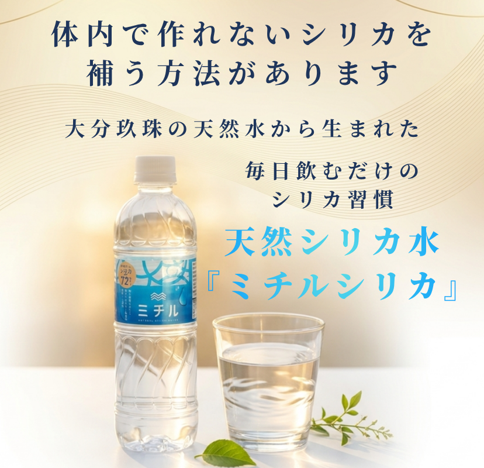
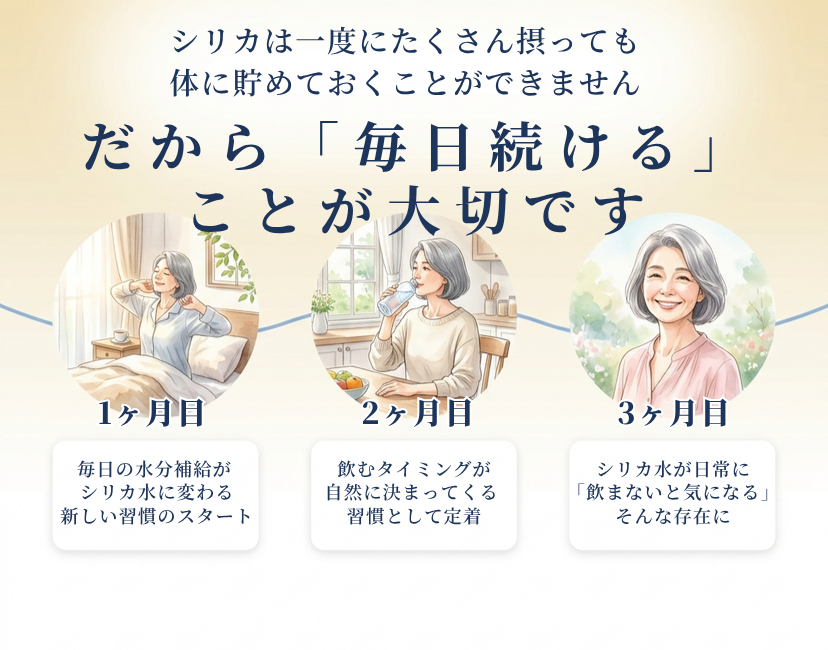

LP sec03-04 画像リニューアル
以下の4枚を新規制作。ig1.php（Meta用）とyahoo.php（Yahoo用）のコード更新済み。WordPressアップロード待ち。
sec01-02（既存・変更なし）
→
sec03-04（この4枚を差替え）
→
sec05以降（既存・変更なし）
sec03 - 1枚目: お悩みセクション

変更点: おばあちゃんの背景画像を使い、「年齢とともに減少するシリカ」への悩みを視覚的に訴求。既存のテキストベースのセクションから、感情に訴えるビジュアルに変更。
sec03 - 2枚目: シリカ減少グラフ

変更点: 年齢とともにシリカが減少していく曲線グラフ。白背景でクリーンなデザイン。「だから補う必要がある」という購入理由を論理的に説明。
sec04 - 3枚目: 解決策

変更点: ボトル・グラス・植物を組み合わせたビジュアルで「ミチルシリカが解決策」を提示。悩み→原因→解決策の流れで、ここで商品を紹介。
sec04 - 4枚目: 続ける価値

変更点: 3ヶ月のタイムラインで「続けるとどうなるか」を可視化。1回買って終わりではなく、定期便で続ける理由を訴求。解約率89.5%（1回で辞める人が多い）への対策にもなる。
← レポートに戻る